「階数」で建物の高さを変える
「階数」を 5 と 30 にして作り、高さの違いを比べます。
SmartTools アドオン解説書
版 1.0.0 ／ 2026年11月18日 ／ Blender 5.1.2 用
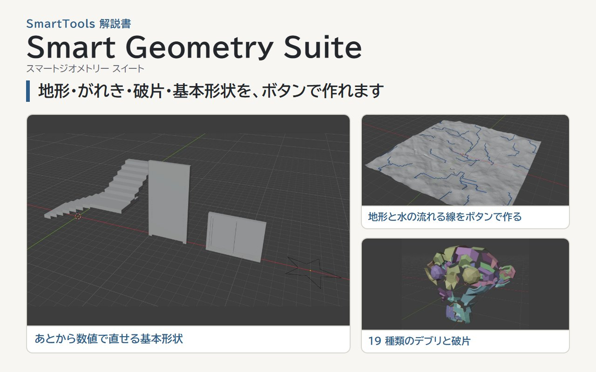
Smart Geometry Suite は、形を自動で作る「生成ツール」をまとめたアドオンです。山や谷のある地形、表面にばらまく点、石やレンガ片などのデブリ（がれき）、メッシュを割った破片、蔦のような曲線を作れます。3ds Max のように、3D ビューポートのドラッグで作る基本形状（ボックス・球・円柱・壁など）も入っています。この基本形状は、あとからモディファイア（形を変える後付けの処理）の数値で大きさを直せます。グリースペンシル（手描きの線）から壁や板のメッシュを作る機能もあります。ボタンは 3D ビューポートのサイドバー「Smart Geometry」タブに、目的ごとの見出しに分けて並んでいます。
地形・がれき・破片・基本形状を、ボタンで作れます
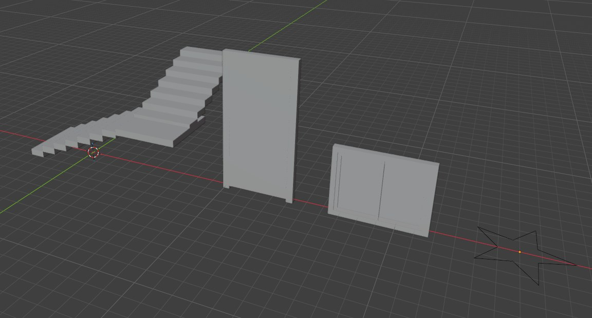

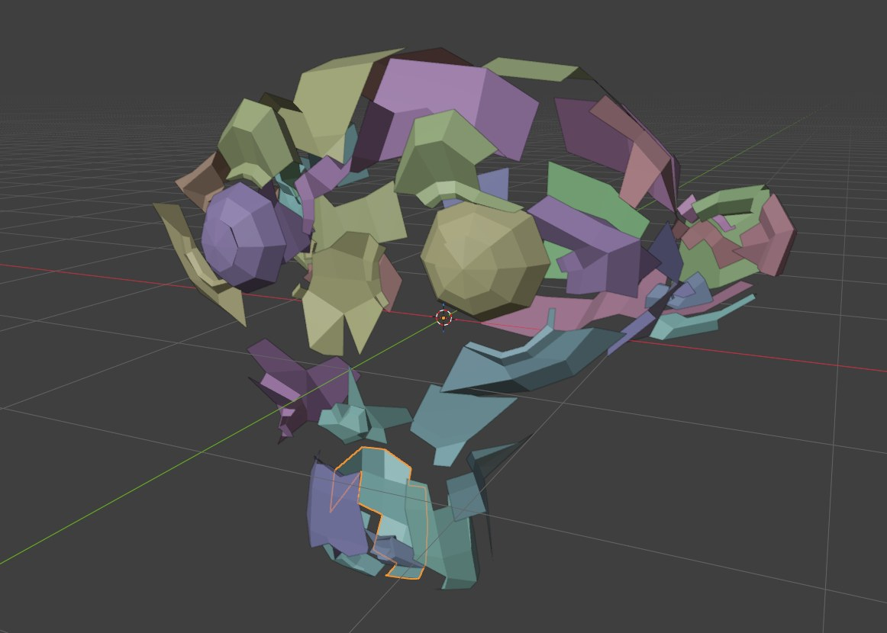
地形・散布の点・がれき（デブリ）・破片・枝分かれした曲線・あとから数値で直せる基本形状などを、ボタンで作る形状生成ツールです。
このアドオンを使うと、画面は次のように変わります。くわしい操作は 5 章の各機能の「実例」で説明します。
実例地形の属性を色で見る（属性ヒートマップ）（作った地形で試した様子）
「属性ヒートマップを作成」で、メッシュの属性（ここでは密度）の大小を色にして書き込み、3D ビューで確かめます。
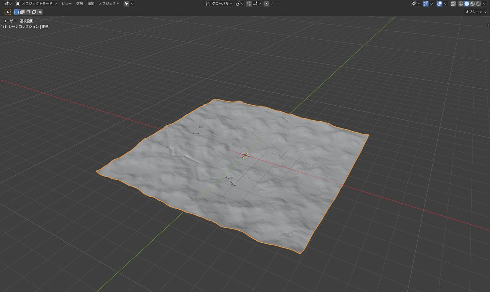

見どころ：灰色だった地形が、密度の値に応じて青から黄・赤へと色分けされます。ここでは中央が高く、外側ほど低いことが色で分かります。
アドオンの入れ方・画面を日本語にする方法・N パネルと「？」ヘルプの共通の使い方は、「SmartTools 全体仕様書」にまとめています。先にそちらの 2〜5 章を読んでください。
| 入れる ZIP | Smart_Geometry_Suite_1.0.0.zip |
|---|---|
| Blender の画面での名前 | Smart Geometry |
| 動く Blender | 5.1.2 |
3D ビューポートのサイドバー（N パネル）の「Smart Geometry」タブにあります。画像エディターやノードエディターなど、ほかのエディターのサイドバーにも同じパネルが出ます。どのエディターに出すかは Smart Tools Manager の設定に従います。ほかに、3D ビューポートの「追加」メニューと、プロパティエディターの「モディファイアー」タブにも入口があります。
| 出る画面 | 3D ビューポート、画像エディター（UV エディター）、ノードエディター、ビデオシーケンサー、動画クリップエディター、ドープシート、グラフエディター、NLA エディター、テキストエディター、ファイルブラウザー、スプレッドシート、プロパティ |
|---|---|
| タブ | Smart Geometry |
| モード | オブジェクトモード |
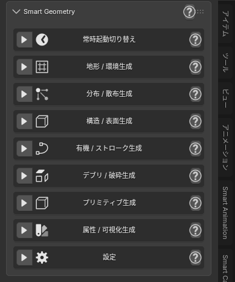
オブジェクトモードの3DビューポートでNキーを押し、「Smart Geometry」タブを開きます。地形を作るには「地形 / 環境生成」の三角を押します。
入口全体の図では、上から2番目に「地形 / 環境生成」があります。
オブジェクトモードで地形を作り、その地形を選択したまま散布へ進みます。点を見つけにくい場合はプロキシを表示すると、草や石を置く位置を確認できます。
作成した地形の上に点が並んでいるか、斜めから見て確認します。
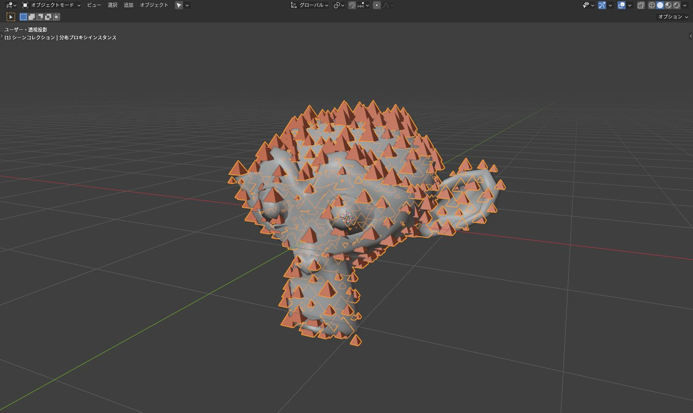
冒頭の「代表的な機能」で紹介した機能の使い方を、図に番号を付けて順に説明します。図の中の番号と、図の下の一覧の番号が対応しています。図を押すと大きく表示されます。設定の一つ一つは 5 章の各見出しで説明します。
3ds Max のように、ボックス・球・円柱・壁などの形を 3D ビューポートのドラッグで作ります。作った形は、あとからプロパティエディターの「モディファイアー」タブで長さや分割の数を変えられます。作り直さなくても、数値を変えて更新するだけで形が変わり、保存して開き直した後も直せます。メニューには、階段・ドア・窓や、星形などの線の形まで入っています。
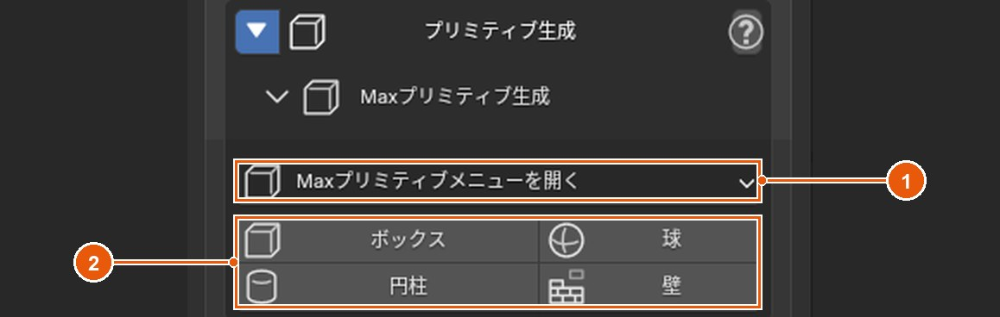
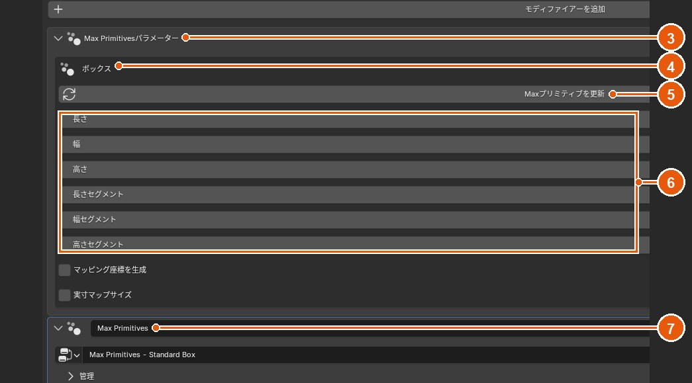
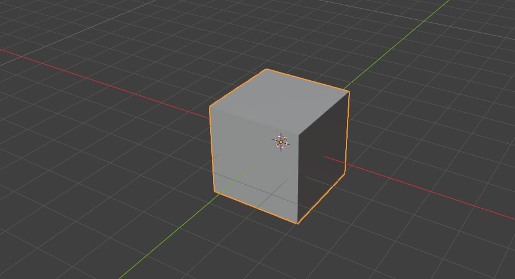


くわしい設定：5-8. 「プリミティブ生成」、5-11. 「Max Primitivesパラメーター」（プロパティエディター）、5-12. 「追加」メニューの入口
数値を決めて「高精度地形を作成」を押すと、削れたような起伏のある地形のメッシュができ、高さ・傾き・水の流れなどの属性も書き込まれます。続けて「排水フローネットワークを作成」を押すと、高い所から谷へ下る枝分かれした線（カーブ）ができ、川や溝の下書きに使えます。
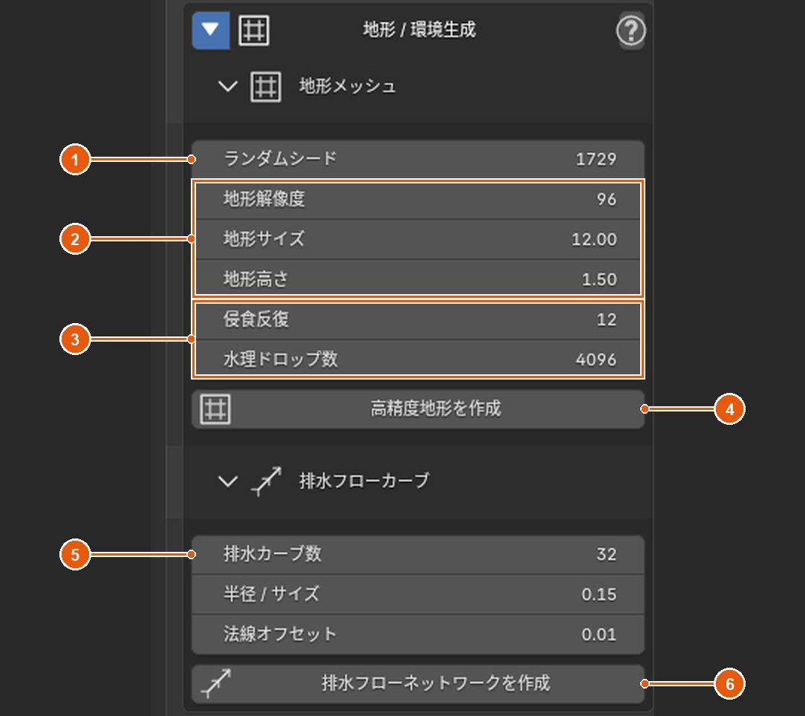

がれき・砂利・川石・結晶・落ち葉・丸太などの小物（デブリ）を、種類（モジュール）を選んで「生成」を押すだけで作ります。モジュールを選ぶと、その種類に合った設定だけが出ます。「メッシュ破砕生成」は、選んだメッシュの面を分けた破片を作り、少しずつ外側へ離して並べます。
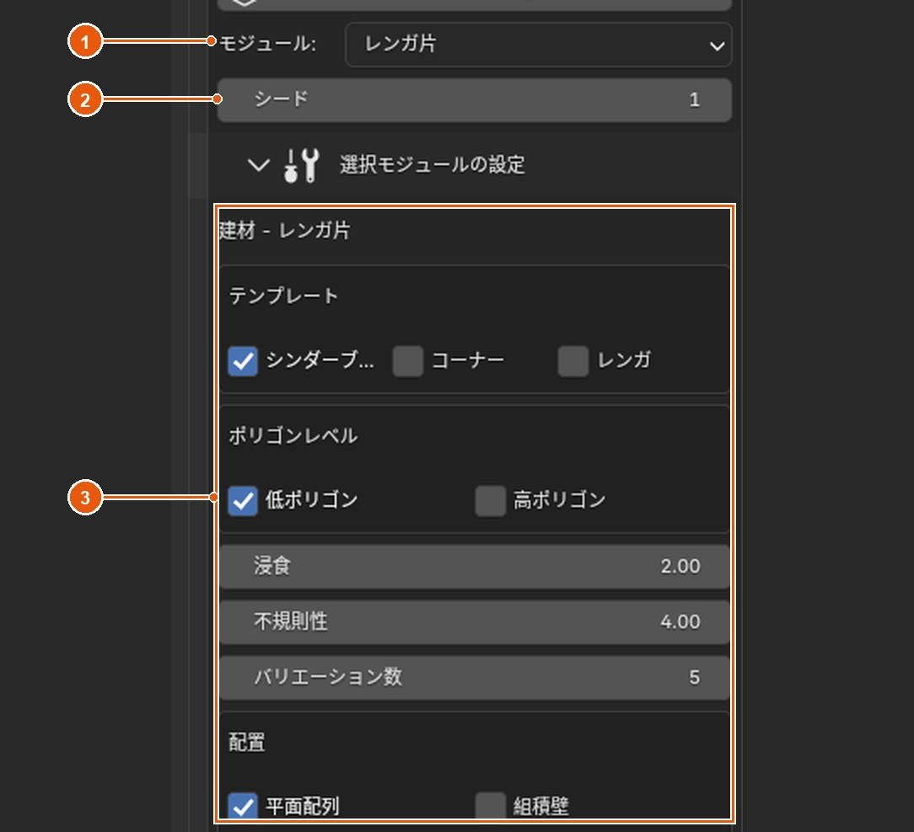
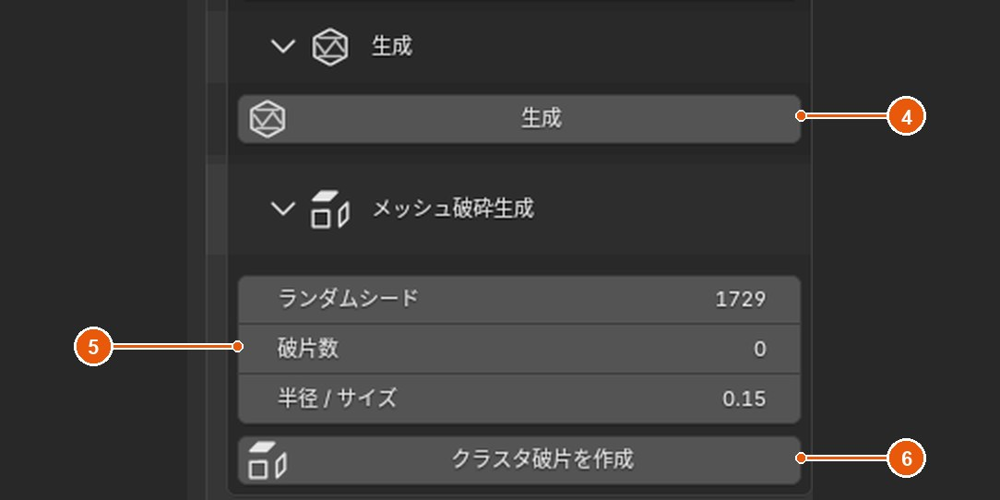
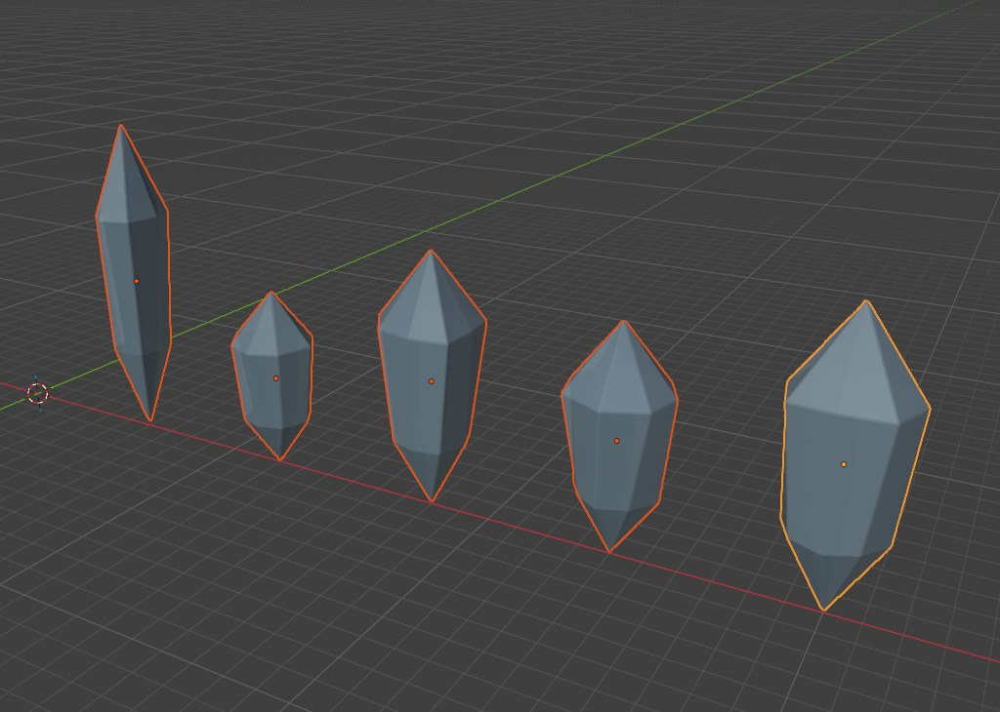
画面の上から順に、見出しごとに説明します。見出しの右の「？」を押すと、同じ内容の説明が画面にも出ます。青い枠の「実例」は、スザンヌなどの簡単なモデルで実際に操作し、3D ビューでの変化を前と後で並べたものです。
パネルには 9 つの見出しが縦に並びます。最初はすべて閉じています。使いたい見出しだけを開いて使います。見出しの中には、さらに小さな折りたたみ（三角の付いた行）があります。
場所サイドバー「Smart Geometry」タブのいちばん上から
| 表示 | 働き |
|---|---|
| 見出しの三角・見出しの文字 | 押すと、その見出しの中身を開いたり閉じたりします。 |
| 「？」 | 見出しの右端にあります。押すと、その見出しの説明が小さな窓で開きます。説明が長い時は、窓の上の「ページ」の数字で次へ送ります。 |
| モードの注意書き | 編集モードなど、オブジェクトモード以外のときは、パネルの上に「オブジェクトモード専用のボタンは無効」と 1 行出ます。パネルの中身は見えますが、オブジェクトモードが必要なボタンは、オブジェクトモードに戻るまで押せません。 |
補助の働きを入れたり切ったりする見出しです。「Nパネル状態保存」は最初「有効」、そのほかは最初「無効」です。必要な物だけを「有効」にします。有効にしても、裏でずっと見張り続けるわけではありません。設定を変えた時や、保存・読み込みの時など、決まった時だけ動きます。
場所パネルの 1 番目の見出し
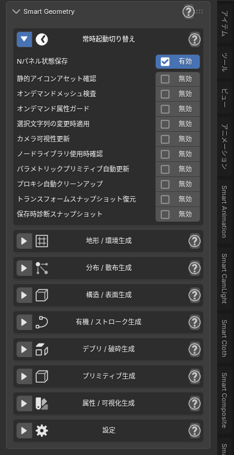
| 表示 | 働き |
|---|---|
| 「Nパネル状態保存」 | パネルの設定を、Blender の設定フォルダー内のファイルに書く時期を決めます。有効なら、変えるたびにすぐ保存します。無効なら、シーンの切り替え・ファイルの保存や読み込み・Blender の終了などの時まで待ちます。 |
| 「静的アイコンアセット確認」 | 同梱のアイコン画像がそろっているかだけを確かめます。画面のアイコンは変わりません。 |
| 「オンデマンドメッシュ検査」 | 選んでいるメッシュの名前・頂点数・面数・属性数・モディファイア数を、診断の表示を開いた時や、この項目を切り替えた時に更新します。 |
| 「オンデマンド属性ガード」 | 機能の適用や生成ボタンの実行の時に、足りない基本の属性を作り足します。 |
| 「選択文字列の変更時適用」 | 「選択文字列」を書き換えた時に、その式をアクティブなメッシュへかけ直します。 |
| 「カメラ可視性更新」 | カメラから見えるかどうかの属性を、関係する操作や保存・読み込みの時だけ更新します。 |
| 「ノードライブラリ使用時確認」 | このアドオンのノードグループが無い時に、必要な場面で作り直します。 |
| 「パラメトリックプリミティブ自動更新」 | ドラッグで作った基本形状（Max Primitives）を、数値を変えた時やフレームが変わった時に自動で作り直します。 |
| 「プロキシ自動クリーンアップ」 | 読み込み・保存の時に、一時的な補助の形を片付けます。 |
| 「トランスフォームスナップショット復元」 | 保存の時に生成物の位置・回転・大きさを記録し、ファイルを読み込んだ後に戻します。 |
| 「保存時診断スナップショット」 | 保存・読み込みなどの時に、診断の JSON ファイルを書き出します。 |
地形のメッシュと、水が流れる道筋を表す線を作ります。中に「地形メッシュ」と「排水フローカーブ」の 2 つの折りたたみがあります。
場所パネルの 2 番目の見出し
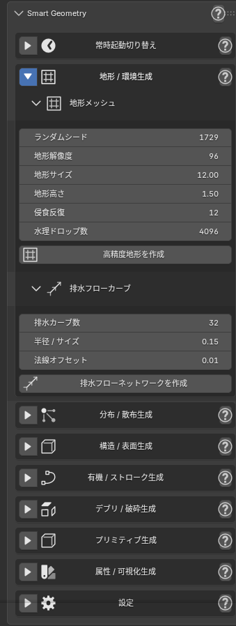
| 表示 | 働き |
|---|---|
| 「地形メッシュ」 | 地形を作る折りたたみです。下の数値を決めてから「高精度地形を作成」を押します。 |
| 「ランダムシード」 | でこぼこの出方を決める番号です。同じ番号と同じ設定なら、同じ形になります。 |
| 「地形解像度」 | 地形の一辺の点の数です。大きいほど細かくなりますが、計算に時間がかかります。 |
| 「地形サイズ」「地形高さ」 | 地形の広さと、起伏の高さを調節する値です。実際の最高点は、地形の形状や生成設定で変わります。 |
| 「侵食反復」「水理ドロップ数」 | 削れたような形や、水の流れた跡を作る計算の回数と量です。大きいほど時間がかかります。 |
| 「高精度地形を作成」 | 地形のメッシュを新しく作ります。高さ・傾き・水の流れなどの属性も一緒に書き込みます。 |
| 「排水フローカーブ」 | 選んでいる地形の高い所から低い所へ向かう線（カーブ）を作る折りたたみです。 |
| 「排水カーブ数」 | 作る線の最大の本数です。 |
| 「半径 / サイズ」「法線オフセット」 | 「排水フローカーブ」の中にも並ぶ値です。線の太さの目安と、線を地面から少し浮かせる量です。太さは、地形の大きさに応じた分より細くはなりません。 |
| 「排水フローネットワークを作成」 | 選んでいるメッシュの高い所から低い所へ、枝分かれした線を作ります。先に「高精度地形を作成」で地形を作ってから使います。傾きはオブジェクトを置いた状態で見ます。高低差の無い平らなメッシュでは線を作らず、エラーを出します。 |
実例ボタン 1 つで起伏のある地形を作る（何もないシーンで試した様子）
「高精度地形を作成」で、でこぼこした地形のメッシュを 1 枚作ります。高さや傾きなどの属性も一緒に書き込まれます。
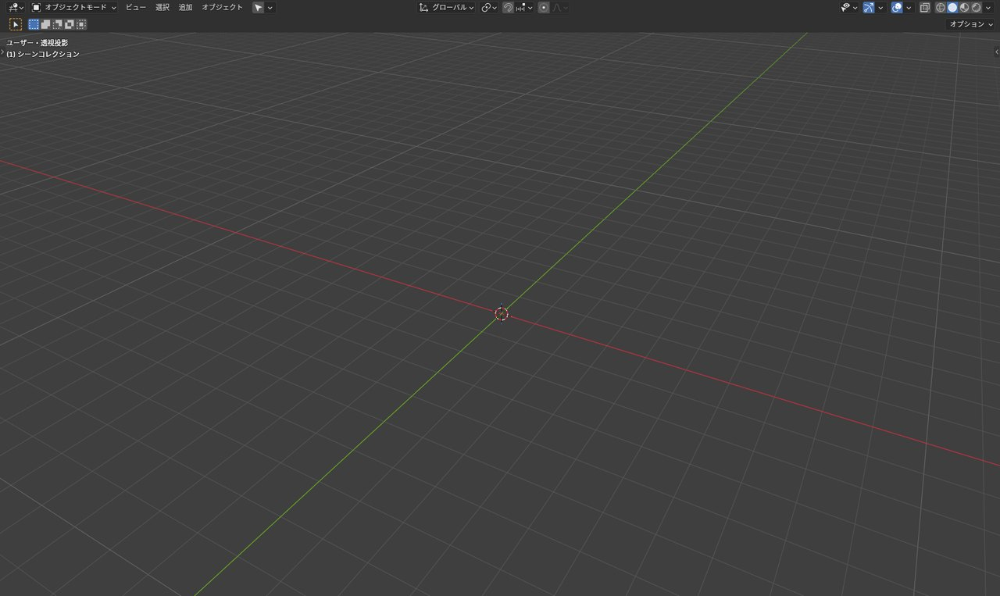
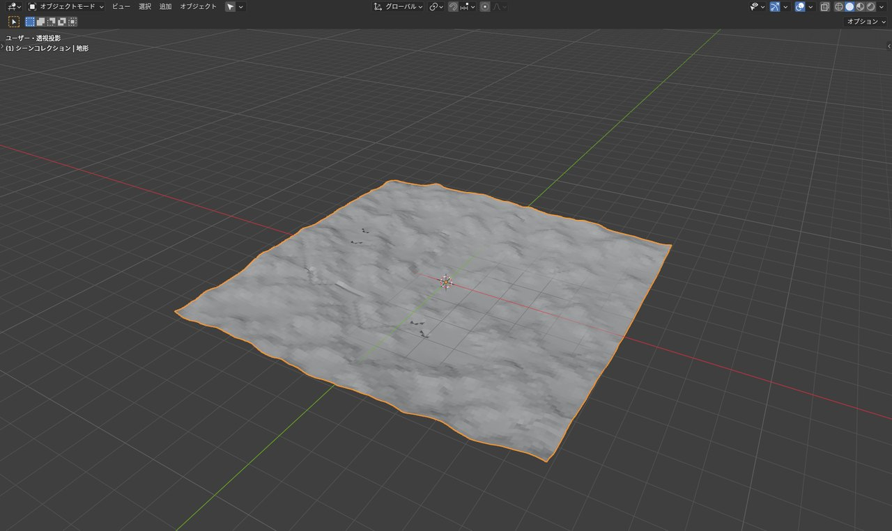
見どころ：何もない所に、起伏のある四角い地形が 1 枚のメッシュとしてでき上がります。同じ「ランダムシード」と同じ設定なら、何度作っても同じ形になります。
実例地形に水の流れる線を引く（作った地形で試した様子）
「排水フローネットワークを作成」で、地形の高い所から低い所へ向かう、枝分かれした線を作ります。
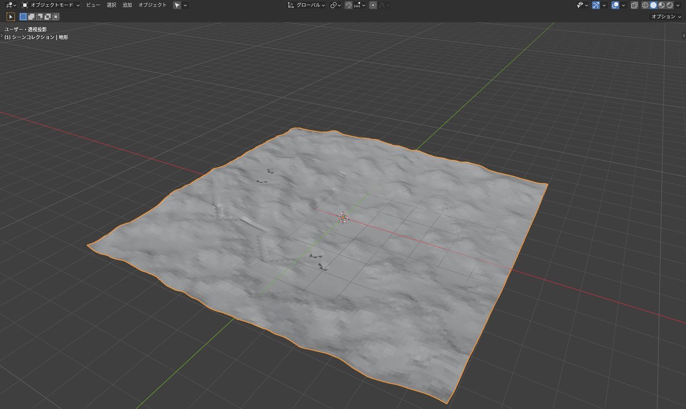
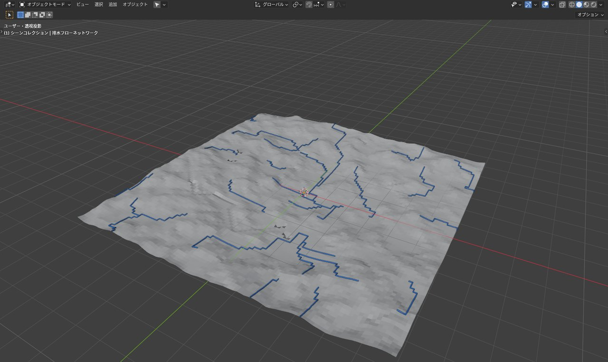
見どころ：起伏に沿って、山の上から谷へ下る線が枝分かれして現れます。線はカーブのオブジェクトなので、川や溝の下書きに使えます。
メッシュの表面に点をばらまきます。点は、草や石を置く位置の目安に使えます。中に 3 つの折りたたみがあります。
場所パネルの 3 番目の見出し
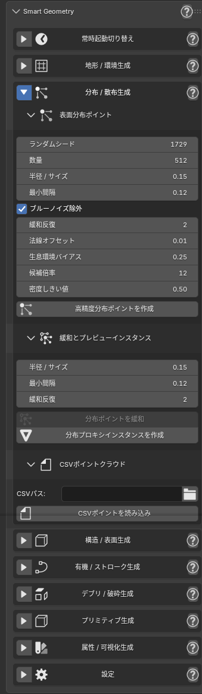
| 表示 | 働き |
|---|---|
| 「表面分布ポイント」 | 点をばらまく折りたたみです。メッシュを選んでいない時は、代わりの平らな格子の上に作ります。 |
| 「ランダムシード」「半径 / サイズ」 | 点の出方を決める番号と、点の大きさの目安です。同じ番号と同じ設定なら、同じ並びになります。 |
| 「数量」 | 作る点の目標の数です。近すぎる点を捨てるので、これより少なくなることがあります。 |
| 「最小間隔」「ブルーノイズ除外」 | 「ブルーノイズ除外」を入れると、近すぎる点を捨てて、かたまりを減らします。そのときの点どうしの最小の距離が「最小間隔」です。 |
| 「法線オフセット」 | 点を面の向き（法線）の方へ少し浮かせます。 |
| 「緩和反復」「生息環境バイアス」「候補倍率」「密度しきい値」 | 点を置いた後に間隔を整える回数、地面の種類の属性をどれだけ重く見るか、1 つの点を置くために試す候補の多さ、置きにくくする密度の境目です。 |
| 「高精度分布ポイントを作成」 | 面を持たない点だけのメッシュ（ポイントクラウド）を作ります。 |
| 「緩和とプレビューインスタンス」 | 作った点を整える折りたたみです。 |
| 「分布ポイントを緩和」 | 選んでいる点の集まりの間隔をそろえます。上の「半径 / サイズ」「最小間隔」「緩和反復」の値を使います。点だけのメッシュ（面が 0）を選んでいる時に押せます。 |
| 「分布プロキシインスタンスを作成」 | 点の位置に小さな四角すいの形を置き、並び方を目で確かめられるようにします。 |
| 「CSVポイントクラウド」 | CSV ファイルから点を読み込む折りたたみです（最初は閉じています）。 |
| 「CSVパス」「CSVポイントを読み込み」 | x・y・z の列を持つ CSV ファイルを指定して、点の集まりのメッシュを作ります。 |
実例スザンヌの表面に点をばらまき、目印の形を置く（スザンヌで試した様子）
「高精度分布ポイントを作成」で表面に点をばらまき、「分布プロキシインスタンスを作成」で、点の位置に小さな四角すいを置いて並び方を確かめます。
見どころ：スザンヌの表面に、たくさんの点が散らばります。点だけでは見えにくいので、四角すいを置くと、どこにどれくらい並んだかがはっきり見えます（四角すいはどれも上向きに置かれます）。
表面に付ける細かいブロックと、段のある建物のような形を作ります。中に 2 つの折りたたみがあります。
場所パネルの 4 番目の見出し
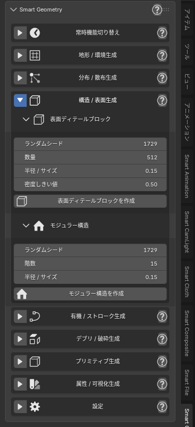
| 表示 | 働き |
|---|---|
| 「ランダムシード」 | どちらの折りたたみにもあります。箱や出っ張りの並び方を決める番号です。同じ番号と同じ設定なら、同じ形になります。 |
| 「表面ディテールブロック」 | 選んでいるメッシュの面の上に、面の向きに合わせた小さなブロックをまとめて作る折りたたみです。メッシュを選んでいない時は、代わりの平らな格子の上に作ります。 |
| 「数量」（表面ディテールブロック） | 作る箱の数の目安です。増やすほど、面が細かい箱で密に覆われます。 |
| 「半径 / サイズ」（表面ディテールブロック） | 箱の大きさと高さの目安です。 |
| 「密度しきい値」（表面ディテールブロック） | 面の密度の属性がこの値より低い所ほど、箱を置きにくくします。上げるほど箱が減ります。立方体の場合、0.95 まで上げると 0.5 の時の半分ほどになります。 |
| 「表面ディテールブロックを作成」 | 「数量」に近い数の箱を面全体に行き渡らせ、1 つにまとめた補助メッシュを作ります。面の少ない立方体でも、面の多い地形でも同じです。機械の部品や壁面の凹凸の下見に使えます。「数量」を何千にも増やすと、数十秒かかることがあります。 |
| 「モジュラー構造」 | 階の部品・壁面の出っ張り・屋根の部品が段になった、建物のような形を作る折りたたみです。 |
| 「階数」 | 階の数を決めます。最初は 15 階で、1〜160 階にできます。増やすほど高くなります。階の高さは「半径 / サイズ」で決まります。 |
| 「半径 / サイズ」（モジュラー構造） | 建物全体の大きさを決めます。2 倍にすると、幅・奥行き・高さがすべて 2 倍になります。 |
| 「モジュラー構造を作成」 | 上の値で、段のある構造のメッシュを作ります。 |
実例立方体の面いっぱいに箱を並べる（立方体で試した様子）
「表面ディテールブロックを作成」で、選んだメッシュの面の上に、面の向きに合わせた箱をまとめて作ります。
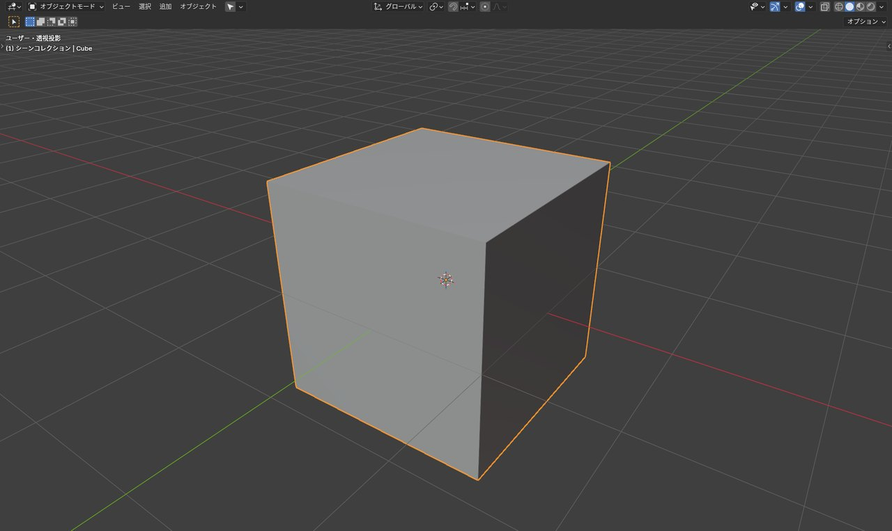
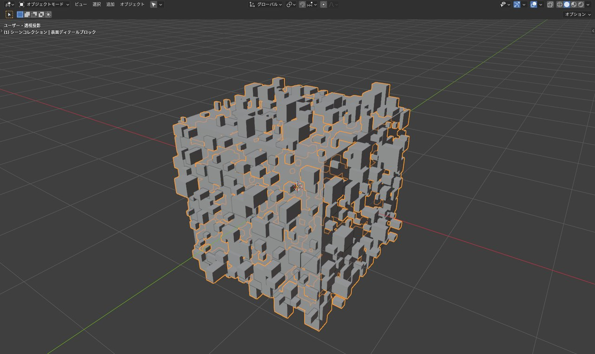
見どころ：「数量」（既定 512）に近い数の箱が、面全体に行き渡って並びます。面の少ない立方体でも面の多い地形でも同じです。箱は元の立方体とは別の 1 つのメッシュとしてできます。
実例「数量」で箱の数を変える（立方体で試した様子）
「表面ディテールブロック」の「数量」を変えて、箱の密度を比べます。
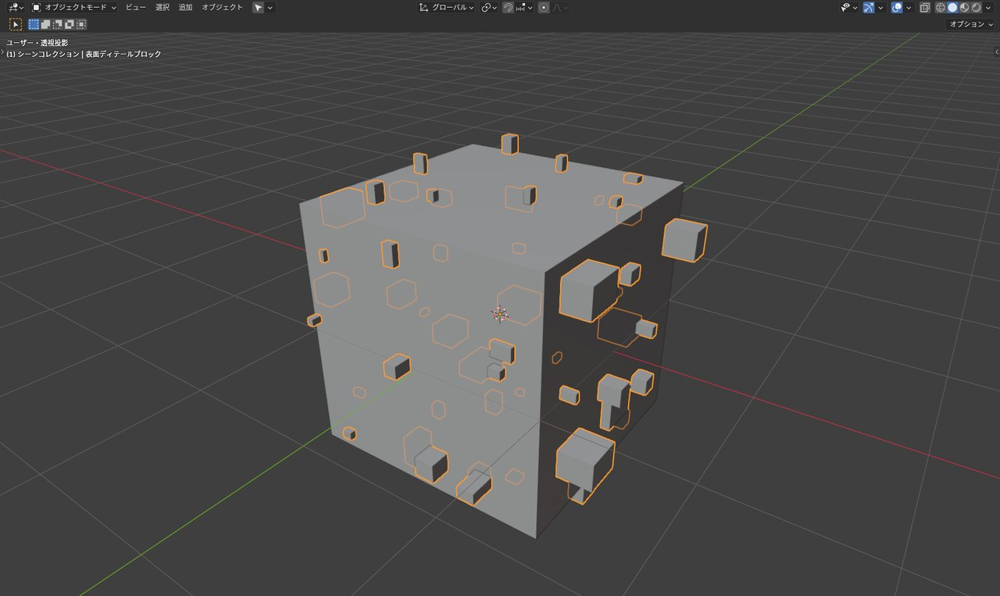
見どころ：「数量」が 64 だと箱はまばらで、512 だと面全体が細かい箱で覆われます。数を増やすほど密になります。比べやすいように、前に作った箱は隠しています。
実例段のある建物のような形を作る（何もないシーンで試した様子）
「モジュラー構造を作成」で、階の部品・壁面の出っ張り・屋根の部品が段になった形を作ります。
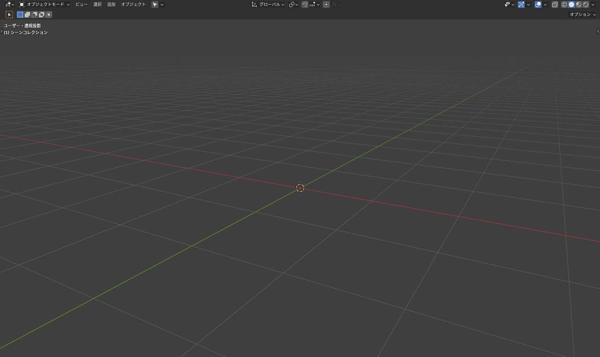
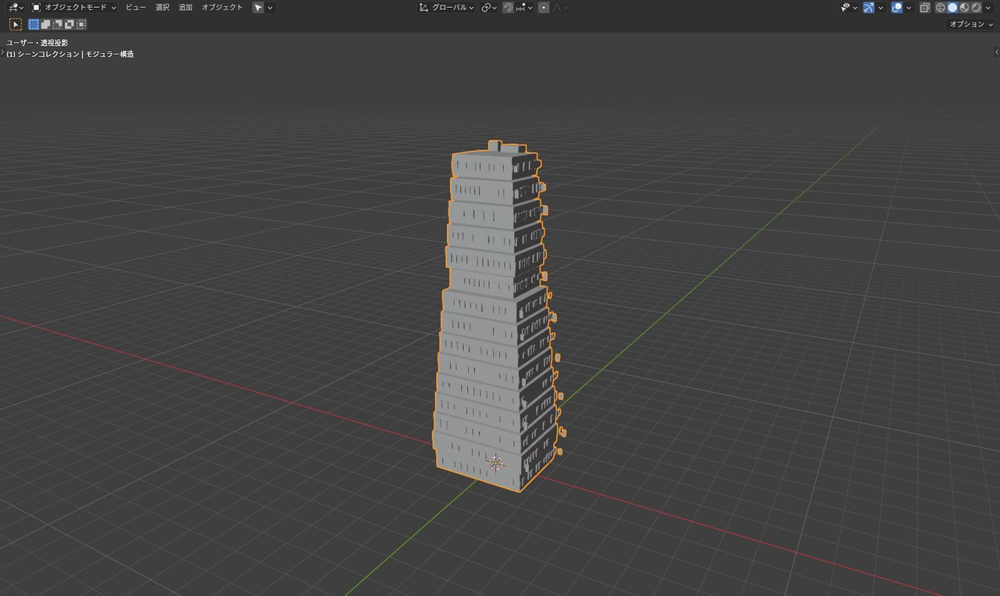
見どころ：上へ行くほど細くなる 15 階の塔のような形が、1 つのメッシュとしてできます。壁面に小さな出っ張りが並び、背景の建物の下書きに使えます。
実例「階数」で建物の高さを変える（何もないシーンで試した様子）
「階数」を 5 と 30 にして作り、高さの違いを比べます。
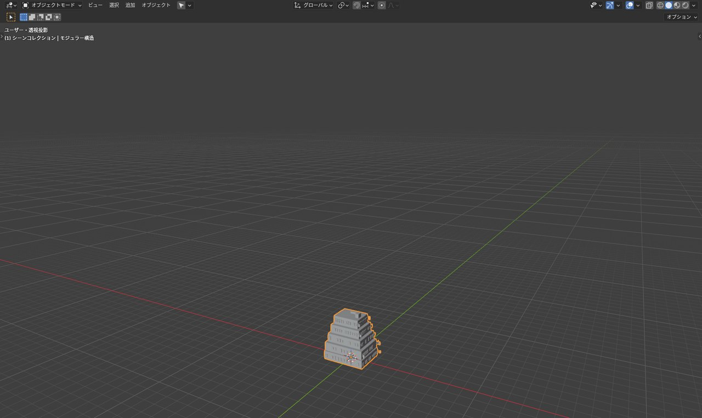
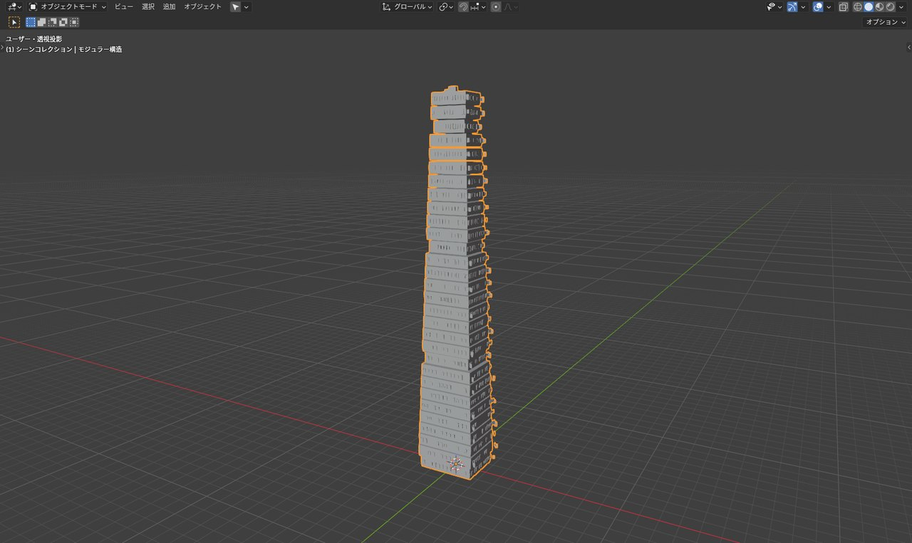
見どころ：「階数」を増やすほど上へ伸びます。幅と奥行きはほぼ同じままです。比べやすいように、2 つの図は同じカメラで撮っています。
枝分かれする曲線と、グリースペンシルの線からメッシュを作る道具です。中に 2 つの折りたたみがあります。
場所パネルの 5 番目の見出し
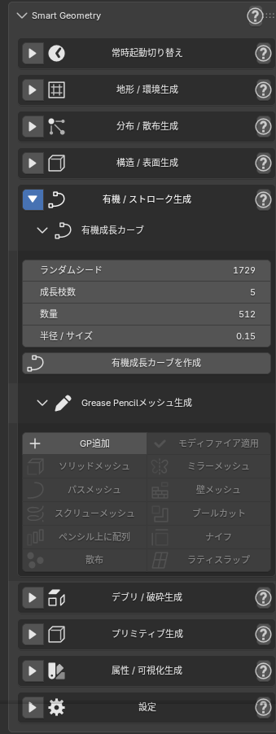
| 表示 | 働き |
|---|---|
| 「有機成長カーブ」 | 蔦・根・ケーブルのような曲線を作る折りたたみです。 |
| 「ランダムシード」 | 線の曲がり方や伸びる向きを決める番号です。同じ番号と同じ設定なら、同じ線になります。 |
| 「成長枝数」 | 枝の本数を決めます。線の本数を増やすにはこの値を上げます。ところどころ短い枝も足されるので、線の本数は少し多くなります（5 で 7 本）。 |
| 「数量」 | 線の本数ではなく、線の細かさを決めます。1 本の枝の点の数は「数量」÷「成長枝数」です。少ないと粗い折れ線になり、多いと細かく曲がる線になります。 |
| 「半径 / サイズ」 | 線の太さと、線が細かく折れ曲がる幅を決めます。大きくすると、太く、うねりの大きい線になります。 |
| 「有機成長カーブを作成」 | 選んでいるメッシュの位置と大きさに合わせて、枝分かれした曲線を作ります。メッシュを選んでいない時は、原点のまわりに作ります。 |
| 「Grease Pencilメッシュ生成」 | グリースペンシルの線から形を作るボタンが 2 列で並ぶ折りたたみです。 |
| 「GP追加」 | 新しいグリースペンシルを追加し、線を描くモードに切り替えます。オブジェクトモードの時に押せます。 |
| 「ソリッドメッシュ」「ミラーメッシュ」「パスメッシュ」「壁メッシュ」 | 線を、厚みのある形・左右対称の形・線に沿った形・壁の形に変えるジオメトリノードのモディファイアを付けます。「壁メッシュ」は、線の始まりと終わりをつないで閉じた壁にします。 |
| 「スクリューメッシュ」 | 線を断面として回し、ろくろで作ったような形を作ります。 |
| 「ブールカット」「ナイフ」 | 線の形で、一緒に選んだほかのメッシュを切ります。押すと設定の小さな窓が出ます。 |
| 「ペンシル上に配列」 | メッシュを選び、最後にグリースペンシルを選んで（アクティブにして）押すと、線に沿ってメッシュを並べます。 |
| 「散布」 | グリースペンシルで描いた × のような印の位置に、レイヤーごとに散布用のオブジェクトを作ります。 |
| 「ラティスラップ」 | メッシュを 2 つ選んで押します。アクティブ（最後に選んだ）でない方のメッシュの大きさに合わせて平たいラティス（形を包んで曲げる箱）を作り、アクティブなメッシュの表面に沿わせます。 |
| 「モディファイア適用」 | アクティブな物に付いたモディファイアをすべて確定し、編集できるメッシュにします。「スクリューメッシュ」の結果のほか、「壁メッシュ」などを付けたグリースペンシルも、そのままメッシュに変わります。「ペンシル上に配列」の結果では、並びの元にしたカーブとグリースペンシルも一緒に消えます。 |
実例スザンヌの上へ伸びる蔦のような線を作る（スザンヌで試した様子）
「有機成長カーブを作成」で、選んだメッシュの位置と大きさに合わせて、蔦や根のように巻きながら伸びる曲線を作ります。表面に沿うのではなく、物の中心から上へ伸びます。
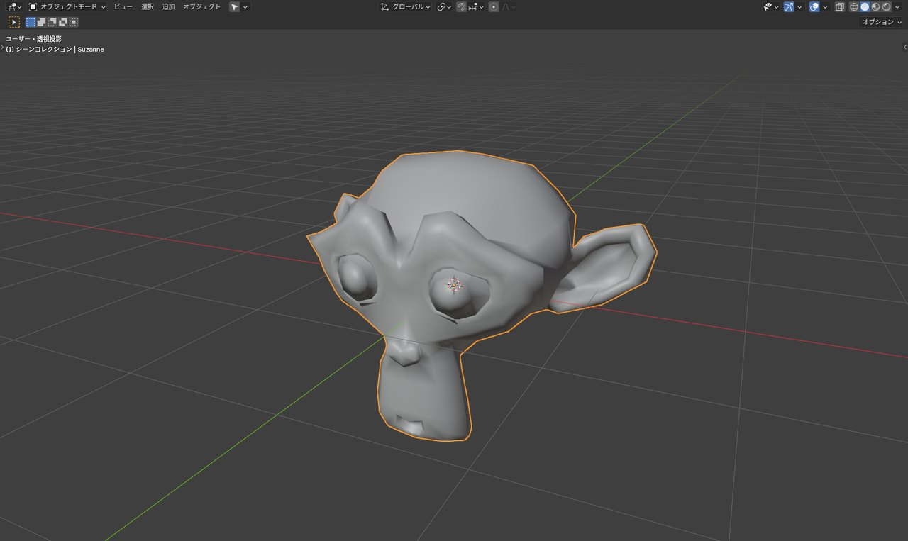
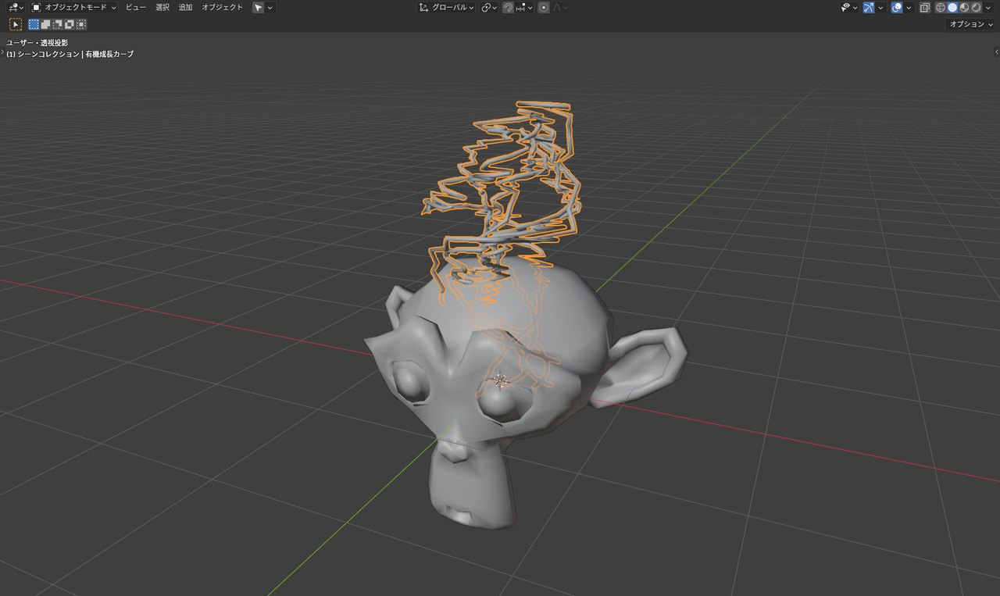
見どころ：スザンヌの中心から上に向かって、細かく折れ曲がり、巻くようにしながら伸びる線が何本もできます。線には最初から細い太さが付いています。曲線はカーブのオブジェクトなので、あとから太さを変えたり、ジオメトリノードで葉を付けたりできます。
実例手描きの線から壁を立てる（グリースペンシルの線で試した様子）
「壁メッシュ」で、上から見た線に沿って、厚みと高さのある壁を立てます。
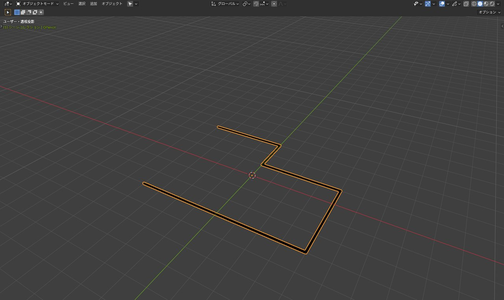
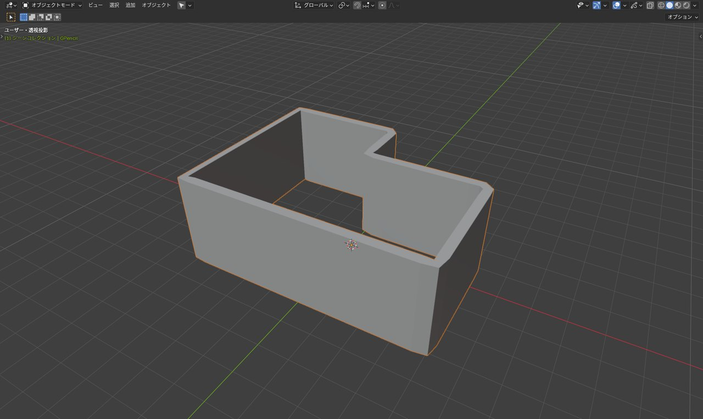
見どころ：細い線だった間取りが、厚みのある壁になります。線の始まりと終わりはつながり、閉じた壁になります。壁の形はモディファイアで作られているので、線を描き足すと壁も変わります。
がれきや小石などの小物（デブリ）と、メッシュを割った破片を作ります。中に「デブリモジュール生成」と「メッシュ破砕生成」の 2 つの折りたたみがあります。
場所パネルの 6 番目の見出し
| 表示 | 働き |
|---|---|
| 「デブリモジュール生成」 | デブリを作る折りたたみです。モジュール（作る物の種類）を 1 つ選ぶと、その種類に必要な設定だけが出ます。中に「モジュール選択」「選択モジュールの設定」「生成」の折りたたみがあります。 |
| 「Smart Geometry デブリ」 | 「モジュール選択」の中にあります。同じ設定を小さな別の窓で開きます。 |
| 「モジュール」 | 作る物を選びます。レンガ片・砂利・川石・結晶・落ち葉・丸太など 19 種類があります。 |
| 「シード」 | 形の出方を決める番号です。同じ番号と同じ設定なら、同じ結果になります。 |
| 「選択モジュールの設定」 | 選んだモジュールの数値が並びます。いちばん上に、モジュールの名前（レンガ片なら「建材 - レンガ片」）が出ます。中身はモジュールごとに変わります。 |
| レンガ片の設定の例 | レンガ片を選ぶと、「テンプレート」（「シンダーブロック」「コーナー」「レンガ」から作る種類を選ぶ）、「ポリゴンレベル」（「低ポリゴン」「高ポリゴン」）、「浸食」（欠けや崩れの量）、「不規則性」（大きさや形のばらつき）、「バリエーション数」、「配置」が出ます。「配置」で「平面配列」を入れるとレンガを平らに並べ、「組積壁」を入れると「ランニング積み」「イギリス積み」「フランドル積み」の積み方と「壁の幅」「壁の高さ」「目地幅」「特殊レンガ率」で壁を組みます。「組積壁」を入れていない間は、積み方と壁の数値は灰色で押せません。 |
| 「生成」 | 選んだデブリをシーンに作ります。オブジェクトモードの時に押せます。 |
| 「メッシュ破砕生成」 | 選んでいるメッシュの面を、まとまりごとに破片に分ける折りたたみです。 |
| 「ランダムシード」 | どの面が同じ破片になるかを決める番号です。番号を変えると、割れ方が変わります。 |
| 「破片数」 | 作る破片の目標の数です。0 のときはメッシュの面数から自動で決めます（面およそ 12 枚で 1 個、3〜64 個の範囲）。 |
| 「半径 / サイズ」 | 破片を外側へ離す量の目安です。 |
| 「クラスタ破片を作成」 | 面のまとまりごとに、中身の無い殻の破片を作り、少しずつ外側へ離して並べます。破片ごとに番号の属性が付きます。別々の部品を結合したメッシュでは、部品は分かれず丸ごとどれかの破片に入ります。元のメッシュは残ります。 |
実例結晶を作る（デブリモジュール）（何もないシーンで試した様子）
「デブリモジュール生成」で作る物（モジュール）を選び、「生成」を押すと、がれきや鉱物などの小物がシーンにできます。
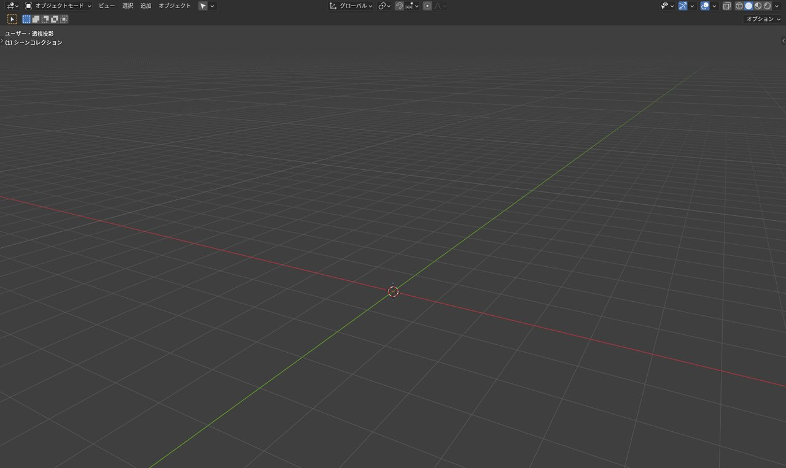
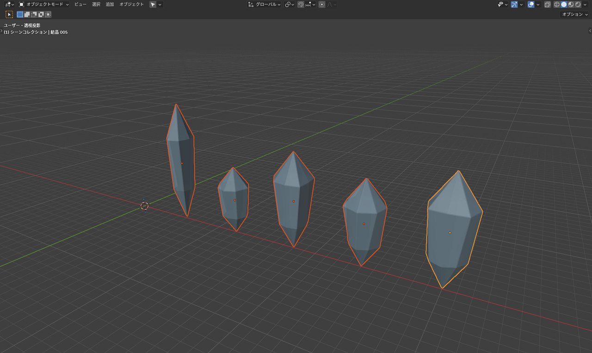
見どころ：何もない所に、とがった結晶が 5 つ並んでできます。「シード」の番号を変えて押し直すと、違う形になります。
実例スザンヌを破片に分ける（クラスタ破片）（スザンヌで試した様子）
「クラスタ破片を作成」で、選んだメッシュの面を分けた破片を作り、少しずつ外側へ離して並べます。
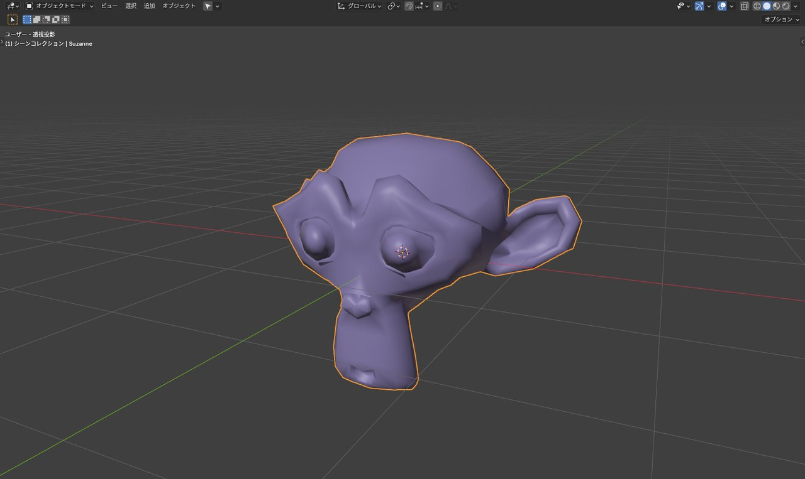
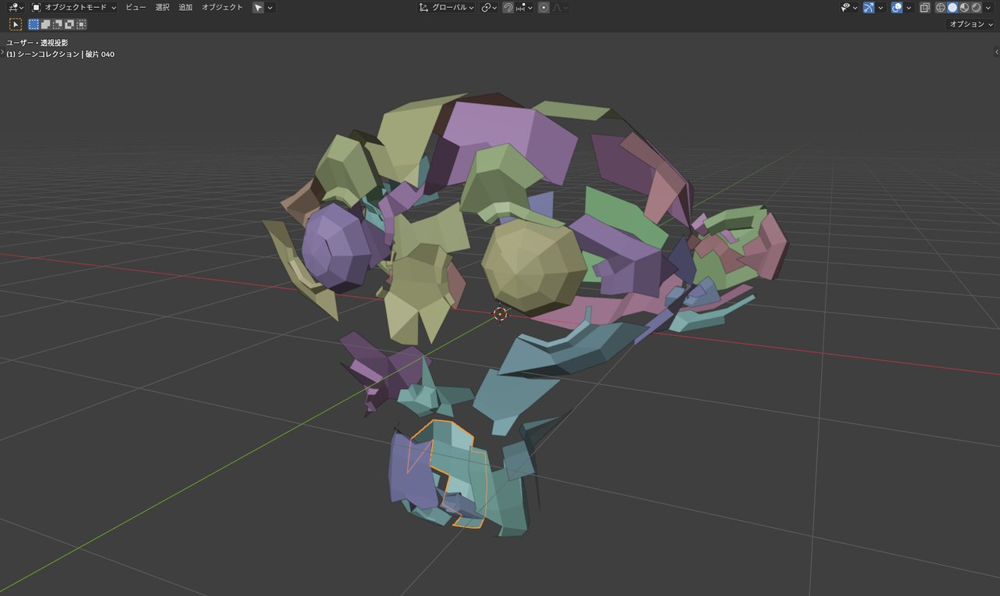
見どころ：1 つだったスザンヌが、面のまとまりごとの破片（スザンヌで約 40 個。中身の無い殻）に分かれて外側へ散らばります。破片の数は「破片数」で変えられます。別々の部品を結合したメッシュでは、部品は分かれず丸ごとどれかの破片に入ります。破片ごとに色を変えて表示すると（シェーディングのカラーを「ランダム」）、分かれ方がよく分かります。元のスザンヌは残るので、見やすいように隠しています。
実例「破片数」で割れ方を変える（スザンヌで試した様子）
「破片数」を 8 と 0（自動）で比べます。
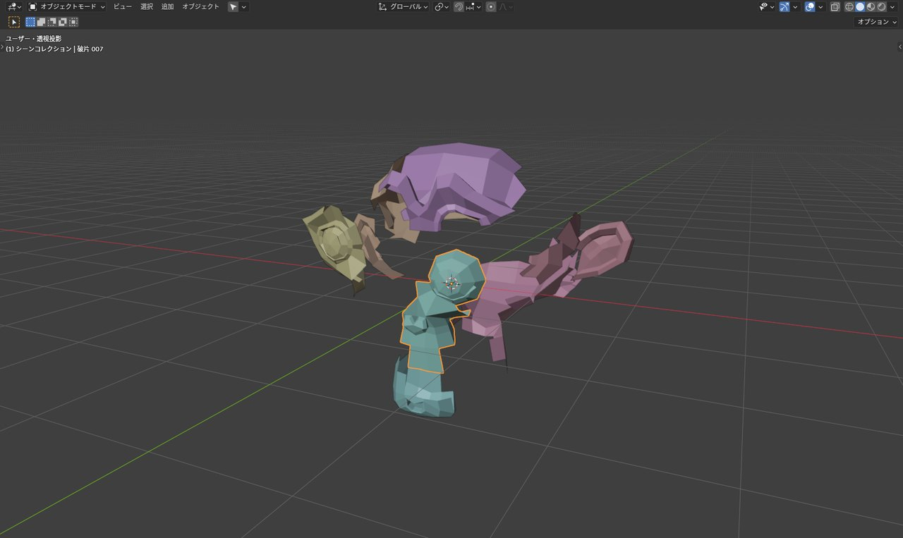
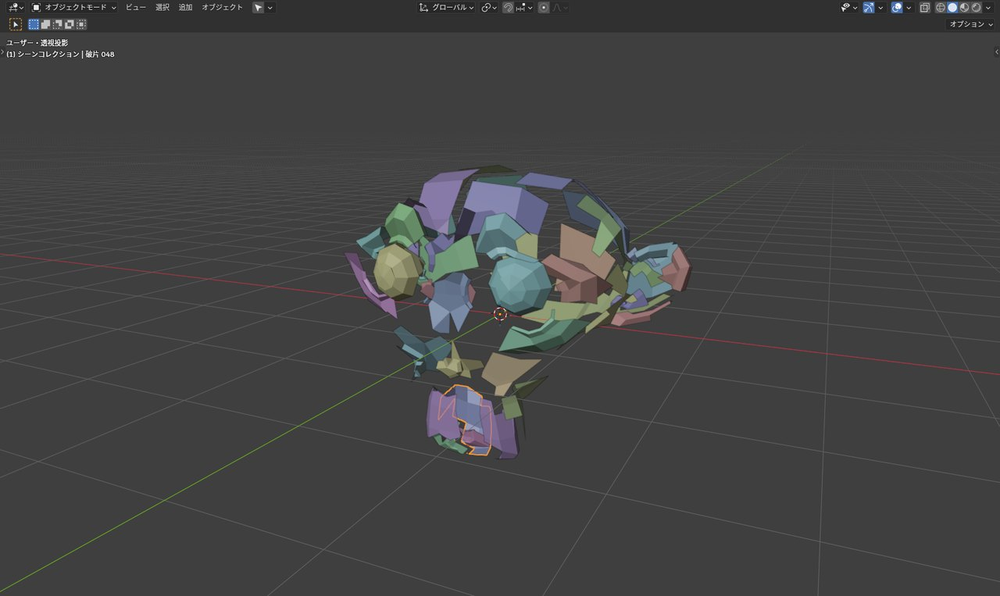
見どころ：「破片数」が 8 だと大きな塊に、0 だと面数から自動で決まった数（スザンヌで約 40 個）の小さな破片に分かれます。比べやすいように、元のスザンヌと前に作った破片は隠しています。
ボックスや壁などの基本形状を、3D ビューポートのドラッグで作ります。作った形は、あとからモディファイアの数値で直せます。
場所パネルの 7 番目の見出しの中の「Maxプリミティブ生成」
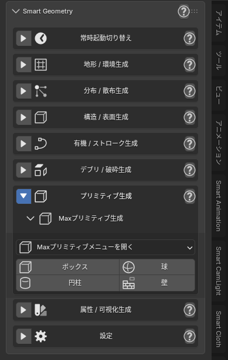
| 表示 | 働き |
|---|---|
| 「Maxプリミティブメニューを開く」 | 作れる形の一覧をメニューで開きます。中身は「追加」メニューの「Max Primitives」と同じで、選ぶとドラッグで作り始めます。 |
| 「ボックス」「球」「円柱」「壁」 | 押してから 3D ビューポートでクリックしてドラッグすると、底の大きさや半径が決まります。高さのある形は、続けてマウスを動かして高さを決め、クリックすると確定します。 |
実例階段・ドア・窓・星形を作る（Max Primitives の形で試した様子）
「Maxプリミティブメニューを開く」には、箱や球のほかに、階段・ドア・窓・シェイプ（線の形）なども入っています。
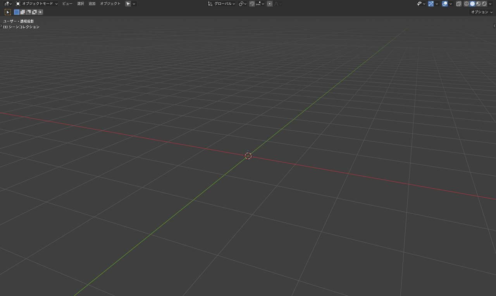
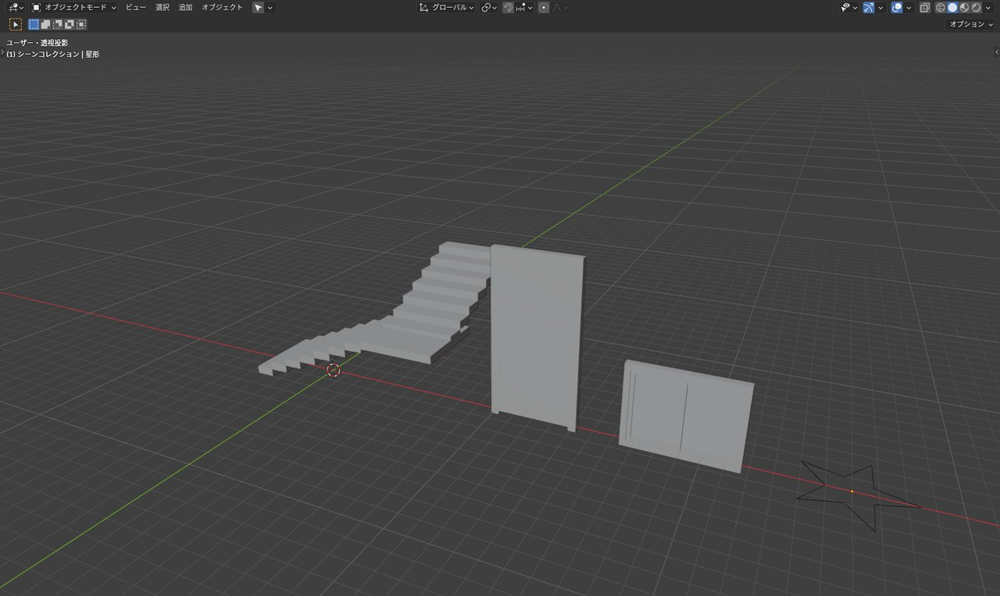
見どころ：どの形も、ドラッグするだけで部品の揃った状態ででき上がり、あとから「モディファイアー」タブの数値で直せます。図は既定の大きさで作り、横に並べています。
実例ストレート階段に手すりを付ける（Max Primitives の形で試した様子）
「階段」の「ストレート階段」を作り、段の形を確かめてから、手すりを付けます。
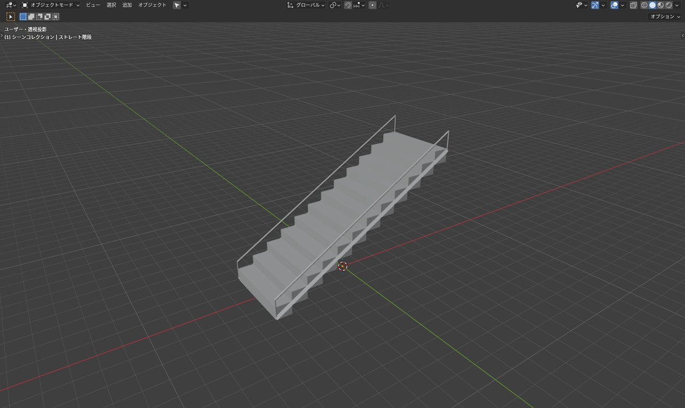
見どころ：作っただけで段が 1 段ずつ見えます。側面の細い棒は「桁」です。「手すり」を入れると、階段の両側に柱と手すりが付きます。図は既定の大きさで作った階段です。
メッシュに属性（頂点ごとの高さ・傾き・密度などのデータ）を書き込み、それを色で確かめます。中に 3 つの折りたたみがあります。
場所パネルの 8 番目の見出し
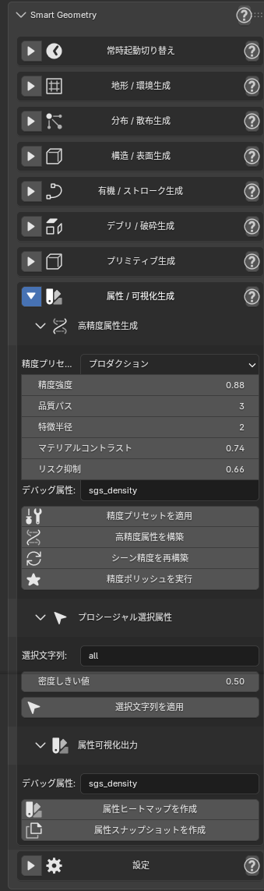
| 表示 | 働き |
|---|---|
| 「高精度属性生成」 | 属性を作る折りたたみです。「精度プリセット」と、「精度強度」「品質パス」「特徴半径」「マテリアルコントラスト」「リスク抑制」などの細かい数値、「デバッグ属性」が並びます。 |
| 「精度プリセット」「精度プリセットを適用」 | 「プレビュー」（速い）・「プロダクション」（標準）・「エクストリーム」（いちばん丁寧）から選び、パネルの数値をまとめて入れ替えます。シーンの物は変えません。 |
| 「高精度属性を構築」 | 選んでいるメッシュに、高さ・傾き・密度などの属性を作ります。散布などの前に使います。 |
| 「シーン精度を再構築」 | メッシュを編集した後に、選んでいるメッシュの属性を作り直します。 |
| 「精度ポリッシュを実行」 | 選んでいるメッシュの属性を作り直し、品質を評価する属性をさらに追加します。 |
| 「プロシージャル選択属性」「選択文字列」 | 文字の式で頂点を選ぶ折りたたみです。たとえば all（全部）、2-15（番号の範囲）、density>0.5（密度が 0.5 より大きい所）のように書きます。下に「密度しきい値」も並びます。 |
| 「選択文字列を適用」 | 式で選んだ結果を、属性と「SGS Selection」頂点グループに書き込みます。 |
| 「属性可視化出力」「デバッグ属性」 | 色で見たい属性の名前を入れます（最初は sgs_density）。 |
| 「属性ヒートマップを作成」 | 選んでいるメッシュに、選んだ属性の大小を色にした色の属性（sgs_debug_heatmap）を書き込みます。3D ビューポートのソリッド表示で、シェーディングのカラーを「属性」にすると、メッシュ上の色で見られます。 |
| 「属性スナップショットを作成」 | 選んでいるメッシュの形を、確認用の別のオブジェクトに写し、選んだ属性の色（ヒートマップ）を書き込んで残します。 |
実例地形の属性を色で見る（属性ヒートマップ）（作った地形で試した様子）
「属性ヒートマップを作成」で、メッシュの属性（ここでは密度）の大小を色にして書き込み、3D ビューで確かめます。
見どころ：灰色だった地形が、密度の値に応じて青から黄・赤へと色分けされます。ここでは中央が高く、外側ほど低いことが色で分かります。
生成以外の設定と操作をまとめた見出しです。表示の設定、ノードライブラリ、機能の適用、診断、書き出しがあります。
場所パネルの 9 番目（いちばん下）の見出し
| 表示 | 働き |
|---|---|
| 「インターフェース」 | 「UI密度」「アイコン倍率」「詳細を表示」があります。「詳細を表示」を入れると、機能の一覧の絞り込みや「カバー範囲サマリー」「保存先」など、詳しい項目が追加で出ます。 |
| 「ノードライブラリとアセット」 | このアドオンのジオメトリノードのノードグループを、「ノードグループライブラリ作成」で作り、「ノードグループライブラリ再構築」で作り直します。「カプセル接頭辞」は作った物の名前の頭に付く文字です。「ノードグループをアセット化」を入れると、作ったノードグループをアセットとして登録します。 |
| 「機能 / パック適用」 | 「アクティブ機能」か「アクティブパック」（機能のまとめ）を選び、「機能を適用」「パックを適用」で、選んでいるメッシュにジオメトリノードのモディファイアとして付けます。 |
| 「診断とクリーンアップ」 | 「診断を更新」で、選んでいるメッシュの名前・頂点・辺・面・属性・モディファイアの数を表示します。「診断JSONを書き出し」「インベントリJSONを書き出し」でファイルに書き出し、「生成済みノードグループを削除」でこのアドオンが作ったノードグループだけを消します。 |
| 「読み込み / 書き出しマニフェスト」 | 「USDサイドカーマニフェストを書き出し」などで、属性やノードグループの情報を、ほかの道具へ渡すための JSON ファイルに書き出します。 |
| 「デブリ補助設定」 | 「組み込みモジュールの利用状況」（同梱のデブリモジュールが使える状態かを表示）と「このアドオンについて」のボタンがあります。 |
| 「ビジュアルリファレンス」 | 「ビジュアルリファレンスを開く」で図の一覧を開き、「アイコンリファレンスを書き出し」で画像を書き出します。 |
ドラッグで作った基本形状を選ぶと、プロパティエディターの「モディファイアー」タブにこのパネルが出ます。形の数値をここで直せます。保存して開き直した後も直せます。
場所プロパティエディター ＞「モディファイアー」タブ
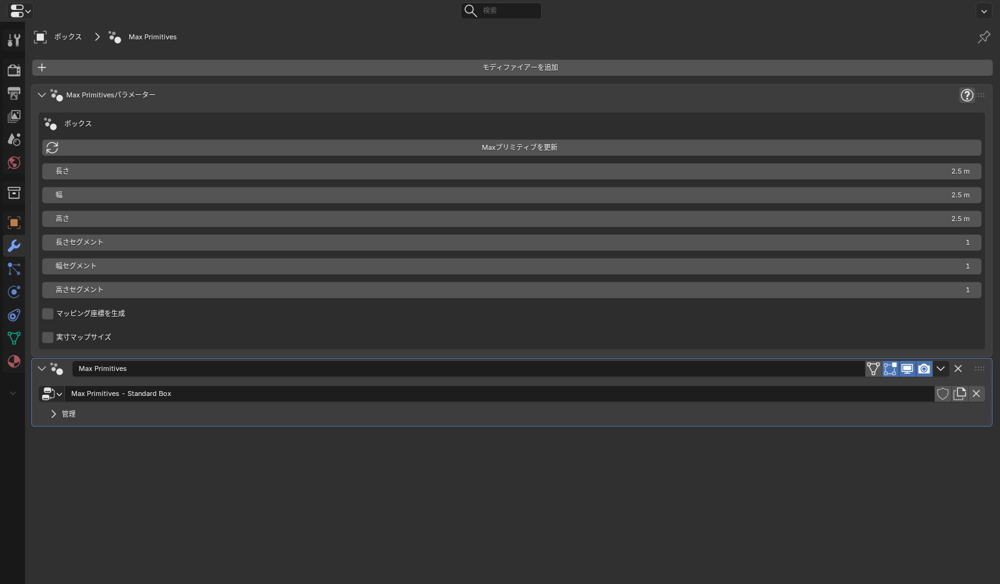
| 表示 | 働き |
|---|---|
| 形の名前 | パネルの最初の行に、選んでいる形の名前が出ます。 |
| 「Maxプリミティブを更新」 | 形の名前のすぐ下にあります。押すと、今の数値をすぐに形へ反映します。 |
| 形ごとの数値 | 幅・高さ・分割数など、形の種類に合った数値が並びます。合成オブジェクトのブーリアンなどでは、オペランド（相手のオブジェクト）を指定すると、その形で切ったり足したりするモディファイアが付きます。 |
| 「手すり」「桁」「段鼻」（階段） | ストレート階段では、「手すり」で階段の両側に柱と手すりが付きます。「桁」は階段の側面に沿って通す棒の数で、最初は 2 本です。「段鼻」は各段の前へ踏み板を張り出す長さです。スパイラル階段には「手すり」だけがあり、外周に沿ってらせん状の線が 1 本付きます。柱は付かないので、段から離れて宙に浮いた線に見えます。L 型階段と U 型階段には、この 3 つはありません。 |
実例ボックスの長さをあとから数値で伸ばす（ボックスで試した様子）
ドラッグで作ったボックスの「長さ」を、「モディファイアー」タブの数値で変えます。
見どころ：作り直さなくても、数値を変えて更新するだけで箱が長くなります。保存して開き直した後も同じように直せます。ここでは長さを 2.5 m から 8 m にしました。図は既定の大きさで作った箱です。
3D ビューポートの「追加」メニューからも、このアドオンの形を作れます。
場所3D ビューポートの「追加」メニュー（Shift＋A）
| 表示 | 働き |
|---|---|
| 「Max Primitives」 | 「標準プリミティブ」「拡張プリミティブ」「AEC 拡張」「ドア」「窓」「階段」「パッチ / NURBS サーフェス」「合成オブジェクト」「シェイプ / スプライン」「シェイプ / NURBS カーブ」「シェイプ / 拡張スプライン」に分かれた形の一覧です。選ぶとドラッグで作り始めます。 |
| 「Max Primitives アセットをインストール」 | 形をアセットとして書き出し、プリファレンスのアセットライブラリに登録します。この操作は元に戻す（Ctrl＋Z）の対象になりません。 |
| 「選択中の Max Primitives オブジェクトを更新」「全ての Max Primitives オブジェクトを更新」 | 選んでいる形、またはファイル内のすべての形を、今の数値で作り直します。 |
| 「メッシュ」の中の「Smart Geometry デブリ」 | デブリの設定を小さな窓で開きます。 |
実際の作業の流れに沿った作例です。手順と、操作の前と後の図を載せています。
Grease Pencilで描いた間取りを壁メッシュに変換。作例では線の始点と終点の間にも壁が立つので、変換前に閉じ方を確認できます。
試す前に 開口を残したい箇所はコピーで閉じ方を確認する。
2枚で見る — 測量地点を置く前の地形 → 94個のマーカーで散布位置を確認 この作例の手順を見る作例を画像で保存 (PNG)導入・トラブルのヘルプ
「階数」を 5 と 30 にして作り、高さの違いを比べます。
ドラッグで作ったボックスの「長さ」を、「モディファイアー」タブの数値で変えます。
丘のどこに測量地点を置くか、3Dで見比べてみましょう。最初の画像は地形だけ、次は各地点にオレンジの四角すいを立てた同じ模型です。地形、地点、表示用のマーカーはそれぞれ別のオブジェクトです。

完成見本で「Sampling locations」を選び、エディターを「スプレッドシート」にすると94個の頂点を数えられます。「Survey markers」は470頂点・470面です。作業画面で点が見つからない場合は、点メッシュを選んで四角すいを作ってください。必要な数を置けない狭い面では、最小間隔を小さくします。
「地形 / 環境生成」で格子解像度 48、地形の幅 10、高さ 1.55、シード 315、水滴数 512、流水の反復回数 6 を指定し、「高精度地形を作成」を押します。作例では2,304頂点・2,209面になりました。散布のシード85と地形を作るシード315は別の操作で使う値です。
Windows版Blender 5.1.2で確認。旧版で作ったブロブ、樹木、階段などを再生成すると、輪郭・寸法・頂点や面の構成が変わる場合があります。旧作品は複製を開いて試し、リグのウェイトや頂点番号で他のデータと対応づけたメッシュは元の形を保存してください。
背景の地面と、草や石を置く位置の目安を作ります。
結果：地形と、その表面に並んだ点の集まりができます。
大きさを数値で直せる箱を作ります。
結果：あとから数値で直せる箱ができます。
小石をまとめて作ります。
結果：シーンに川石の形ができます。
手描きの線を、壁の形にします。
結果：線に沿った壁の形ができます。線の始まりと終わりの間も壁でつながります。壁の形は、グリースペンシルに付いたモディファイアで表示されます。
メッシュのどこが高い・急かを目で見ます。
結果：属性の大小が、メッシュ上の色で見られます。
アドオンが出ない・日本語にならない、など全部のアドオンに共通のことは、全体仕様書の「困った時」を見てください。
| アドオン | Smart Geometry Suite（smart_geometry_suite） |
|---|---|
| 版 | 1.0.0 |
| ZIP | Smart_Geometry_Suite_1.0.0.zip |
| 大きさ | 692,084 バイト |
| SHA256 | 1508f6be220e9991c1b2da028cd0955aa4195782ef6cc58fd3c8d7b69a822ad4 |
Smart Geometry Suite 解説書 v1.0.0 ／ 2026-11-18 作成